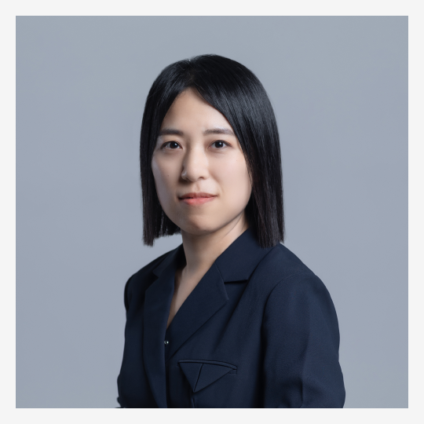

PRINCIPAL INVESTIGATOR
-

Department of Material Science and Engineering, School of Engineering
Department of Chemistry, School of Science
Research Center for Industries of the Future
Hailin Fu, Ph.D.
“I look forward to working with the most active and foreseeing minds and conducting highly unique and inspiring works in the Westlake University.”
Dr. Fu received her Bachelor's degree from the Department of Chemistry and Chemical Engineering in Nanjing University, China in 2012. She then joined Prof. Yao Lin’s group to study cooperative behaviors in polymerizations and foldings of complex macromolecules in University of Connecticut, USA. She obtained her Ph.D degree in polymer chemistry in 2018. She continued with her postdoc trainings in Prof. Ting Xu’s group on random heterogeneous polymers in University of California Berkeley, USA (2019 – 2020) and Prof. E. W. Meijer’s group on supramolecular polymers in Eindhoven University of Technology, Netherlands (2021 – 2024). Dr. Fu’s research is published in Nature, Nat. Chem., Proc. Natl. Acad. Sci. U.S.A., J. Am. Chem. Soc., Nat. Commun., Macromolecules, Biomacromolecules, and other journals.
EMAIL: fuhailin@westlake.edu.cn
OTHER MEMBERS
-

Yang Ma
Postdoctoral fellow
Yang Ma received her B.S. degree in Chemistry from Central South University (CSU, China) in 2018. She completed her joint Ph.D. program in Chemistry at ShanghaiTech University and the Shanghai Institute of Organic Chemistry (SIOC), Chinese Academy of Sciences, in 2023. After graduation, she worked as a research assistant at SIOC. In 2024, she joined Prof. Eugene Chen’s group at the Department of Chemistry, Colorado State University (CSU, the U.S.) as a postdoctoral fellow. In 2025, she continued her postdoctoral research at Westlake University, and since Oct. 2026, she has been working as a postdoctoral researcher in the group of Prof. Hailin Fu. Her previous research focused on the synthesis of functional polymers and their applications in sustainable chemistry and energy storage. Her current research interests focus on elucidating the fundamental mechanisms of supramolecular systems.
 EMAIL: mayang@westlake.edu.cn
EMAIL: mayang@westlake.edu.cn
-

Min Zhou
Postdoctoral fellow
Min Zhou received her Ph.D. in Materials and Chemical Engineering from Hunan University in 2026. Her doctoral research focused on the reaction kinetics and molecular mechanisms of amine-based CO₂ capture systems. She joined Westlake University as a postdoctoral researcher in July 2026. Her current research interests focus on multiscale simulations and theoretical modeling of macromolecular and supramolecular systems, particularly supramolecular self-assembly, liquid–liquid phase separation, and their underlying molecular mechanisms and dynamics.
EMAIL: zhoumin40@westlake.edu.cn
-

Feixia Ruan
Ph.D. Student
Feixia Ruan earned her bachelor's degree in Materials Science and Engineering from Zhejiang Sci-Tech University and a master's degree in Biomedical Engineering from South China University of Technology. She is currently a doctoral student in Materials Science and Engineering at Westlake University. Her research primarily focuses on supramolecular synthesis and phase separation behavior. In her leisure time, she has a passion for exploring art exhibitions, immersing herself in the world of musicals, and finding inspiration in the intersection of science and creativity.
EMAIL: ruanfeixia@westlake.edu.cn
-

Binxuan Li
Ph.D. Student
Binxuan Li received his B.E. from Dalian University of Technology in 2021, M.E. from Tianjin University in 2024, and then he was admitted to Westlake University as a PhD student in 2024, majoring in materials science and engineering. His previous major was polymer material science and engineering, and his master’s work was about free-standing bacterial cellulose-templated radiative cooling liquid crystal films with self-adaptive solar transmittance modulation. He is now interested in the cutting-edge field of supramolecule polymer and its advanced applications.
EMAIL: libinxuan@westlake.edu.cn
-

Yuanyuan Ji
Administrative Assistant
Yuanyuan Ji obtained her Master's degree from Zhejiang University and joined the Fu's Group as an Administrative Assistant in 2025. She is patient, helpful, and has a strong passion for working in scientific support.
EMAIL: jiyuanyuan22@westlake.edu.cn
-

Daxiang He
Ph.D. Student
Daxiang He got his bachelor's degree from Northwestern Polytechnical University in 2025, he was also admitted to Westlake University as a PhD student this year. His previous major was polymer material and engineering, and accumulated sufficient theoretical knowledge during his four years of undergraduate study. For his graduation project he mainly focus on organic synthesis, especially interested in para-selective alkylation of aryl amides. As a newcomer to the field of supramolecular chemistry, he possesses sufficient academic enthusiasm and an exploratory spirit to sustain his research over the next five years.
EMAIL: hedaxiang@westlake.edu.cn
-

Zhuoying Jiang
Ph.D. Student
Zhuoying Jiang received his bachelor's degree from Zhejiang Normal University, majoring in Intelligent Manufacturing Engineering. And he was admitted to Westlake University as a PHD student in 2025. In the field of supramolecular chemistry, he will, from the perspective of mechanical engineering, explore the mysteries of the dynamic behavior of supramolecular polymers.
EMAIL: jiangzhuoying@westlake.edu.cn
-

Chengyu Liu
Ph.D. Student
Chengyu Liu earned his B.E. in Biomedical Engineering from Southern University of Science and Technology (SUSTech), where he continued to complete his M.S. in Biology within the same department. In 2025, he joined Westlake University as a Ph.D. student in Materials Science and Engineering. His current research focuses on the dynamic regulation of supramolecular systems. Outside the lab, he enjoys playing badminton.
EMAIL: liuchengyu@westlake.edu.cn
-

Wenjun Hu
Ph.D. Student
Wenjun Hu received his bachelor's degree from Soochow University and majored in textile engineering. And she was admitted to Westlake University as a PHD student in 2024, majoring in materials science and engineering. She is now interested in the LLPS of supramolecules and its applications.
EMAIL: huwenjun@westlake.edu.cn
-

Haonan Sheng
Ph.D. Student
Haonan Sheng received his bachelor's degree from Zhejiang University and majored in polymer science and engineering. And he was admitted to Westlake University as a PHD student in 2023, majoring in materials science and engineering. He is now interested in the LLPS of supramolecules and its applications.
EMAIL: shenghaonan@westlake.edu.cn
-

Ziyue Hu
Ph.D. Student
Ziyue Hu received her bachelor's degree in Applied Chemistry from Northwest A&F University. Her current research is mainly focused on supramolecular polymers.
EMAIL: huziyue@westlake.edu.cn
-

Xiaolong Chen
Visiting Student
Xiaolong Chen obtained his master’s degree from Soochow university and joined the Fu’s group as an Research Assistant in 2025. He mainly focus on organic synthesis and polymer mechanochemistry during graduate studies.
EMAIL: cxz2020_15@163.com
-

Xiaokun Liu
Administrative Assistant
Xiaokun Liu obtained her Bachelor’s degree from Shandong Agricultural University and joined the research group of Hailin Fu as an Administrative Assistant in 2026. She is principled, approachable and dedicated to continuous learning, with a profound enthusiasm for scientific research and a strong commitment to supporting the daily operation and management of the laboratory.
EMAIL: liuxiaokun@westlake.edu.cn